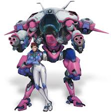
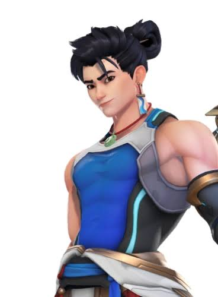

Trois héros, trois façons de jouer.

Hana Song, ancienne joueuse pro, pilote un mécha de combat.
Lena Oxton, pilote britannique, se déplace à toute vitesse dans le temps.

Wuyang Ye, étudiant chinois à l'école de l'eau, soigne avec la maîtrise de l'eau.
| Héros | Rôle | Origine | Ultime |
|---|---|---|---|
| D.Va | Tank | Corée du Sud | Autodestruction |
| Tracer | Dégâts | Royaume-Uni | Bombe à impulsion |
| Wuyang | Soutien | Chine | Vague détonante |